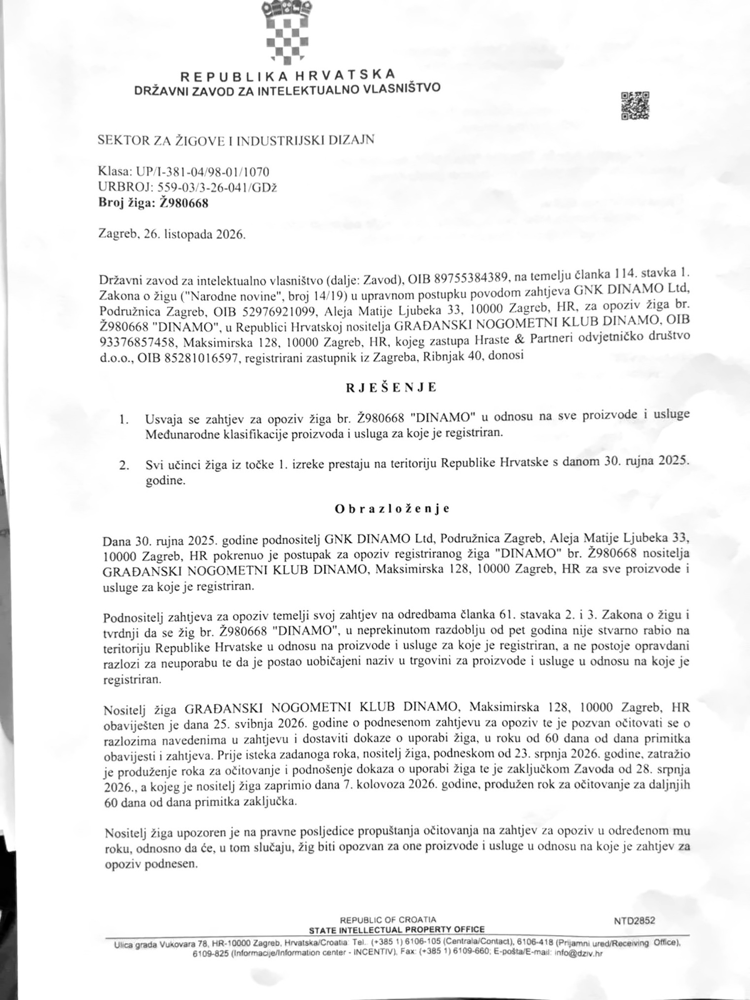
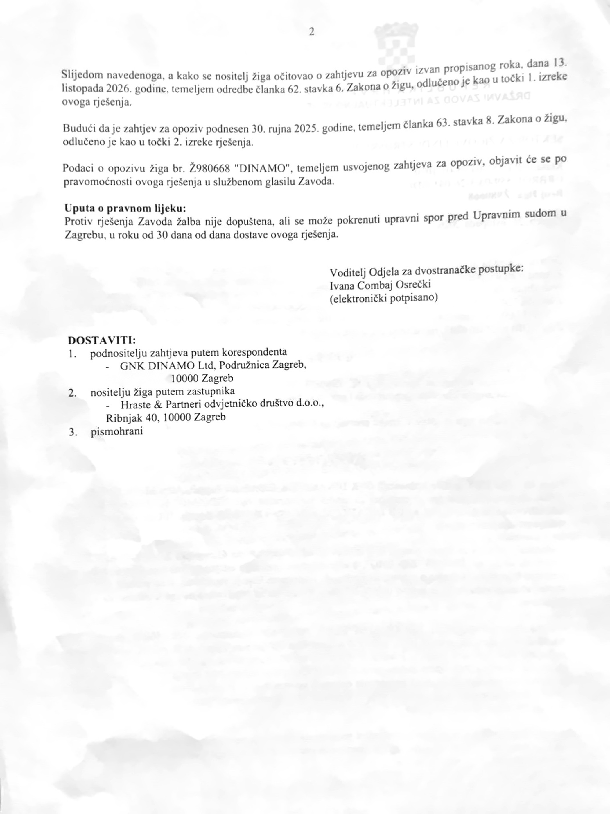
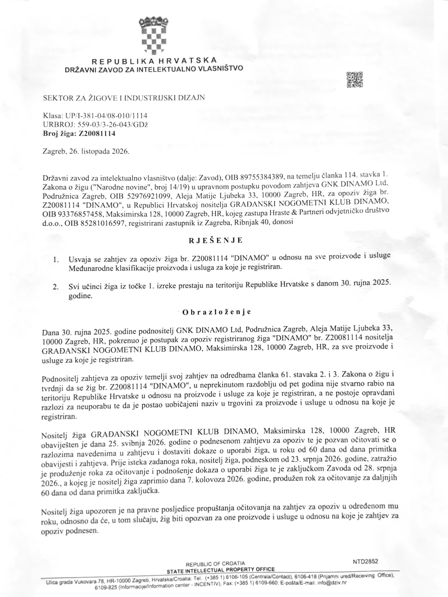
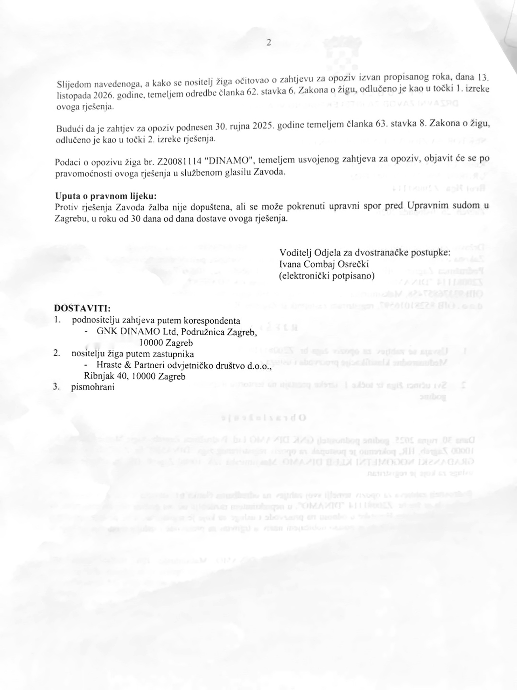

Dinamo izgubio dva verbalna žiga „DINAMO” – Ž980668 i Z20081114: DZIV odlučio nakon propuštenog roka
Državni zavod za intelektualno vlasništvo (DZIV) Republike Hrvatske donio je odluke kojima je opozvao dva samostalna verbalna žiga za riječ „DINAMO” iz popisa od 12 registracija na koje se klub pozvao pred sudom. Prema obrazloženjima, odluke su donesene nakon što je nositelj dostavio očitovanja izvan produljenog roka, a ne nakon zasebne meritorne ocjene svih dokaza uporabe. Protiv rješenja žalba nije dopuštena, ali klub može pokrenuti upravni spor u roku 30 dana od dostave.
Državni zavod za intelektualno vlasništvo (DZIV) Republike Hrvatske 26. listopada 2026. donio je dva rješenja kojima su usvojeni zahtjevi američkog društva GNK DINAMO Ltd. za opoziv hrvatskih verbalnih žigova „DINAMO”, brojevi Ž980668 i Z20081114, nositelja zagrebačke udruge Građanski nogometni klub DINAMO.
U javno objavljenom sudskom predmetu Ovr-126/2025 zagrebački je Građanski nogometni klub DINAMO naveo ukupno 12 registriranih žigova. Među žigovima s tog popisa samo su se dva samostalna verbalna žiga sastojala od same riječi „DINAMO”, i to Ž980668 i Z20081114. Upravo su oba ta verbalna žiga opozvana rješenjima DZIV-a od 26. listopada 2026. godine, uz određeni prestanak njihovih učinaka od 30. rujna 2025. godine. Preostale registracije s tadašnjeg sudskog popisa, uključujući figurativne žigove i verbalni žig „NEMA PREDAJE”, nisu predmet tih dvaju opoziva. Broj 12 odnosi se na žigove navedene u tom sudskom postupku, a ne nužno na sve povijesne ili kasnije prijave i registracije kluba.
Za oba žiga usvojen je opoziv za sve proizvode i usluge za koje su registrirani. U objema izrekama navedeno je da učinci tih konkretnih registracija na teritoriju Hrvatske prestaju 30. rujna 2025., odnosno od datuma zahtjeva za opoziv. Riječ je o učinku koji prethodi datumima samih rješenja.
Zašto su žigovi opozvani: naknadno očitovanje nakon produljenog roka
U oba rješenja od 26. listopada 2026. Zavod navodi da je Građanski nogometni klub DINAMO 25. svibnja 2026. obaviješten o zahtjevima za opoziv te pozvan očitovati se i dostaviti dokaze o uporabi žiga u roku od 60 dana. Nositelj je 23. srpnja 2026. zatražio produljenje. Zaključkom DZIV-a od 28. srpnja 2026., koji je prema rješenjima zaprimio 7. kolovoza 2026., odobreno mu je dodatnih 60 dana od primitka zaključka.
Unatoč produljenju, očitovanja su podnesena 13. listopada 2026. DZIV je u oba rješenja kao odlučujući razlog naveo da su podnesena izvan propisanog roka te primijenio članak 62. stavak 6. Zakona o žigu.
„Slijedom navedenoga, a kako se nositelj žiga očitovao o zahtjevu za opoziv izvan propisanog roka, dana 13. listopada 2026. godine, temeljem odredbe članka 62. stavka 6. Zakona o žigu, odlučeno je kao u točki 1. izreke ovog rješenja.”
Točno je, dakle, da su u postupcima opoziva podneseni zahtjevi američkog društva, ali odluke DZIV-a u svojim obrazloženjima kao procesni razlog navode zakašnjelo očitovanje zagrebačkog kluba. To nije isto što i sadržajni zaključak da klub nema pravo na povijest, sportsko ime ili druge oblike zaštite, niti znači da su u tim odlukama pojedinačno ocijenjeni svi mogući dokazi stvarne uporabe.
Prema izrekama, prestanak učinaka dviju konkretnih hrvatskih registracija određen je od 30. rujna 2025., što ima retroaktivan učinak u odnosu na datum donošenja rješenja. Druge žigovne registracije i pravne osnove zaštite treba promatrati zasebno.
Pravni lijek: nije žalba, nego upravni spor u roku od 30 dana od dostave
Uputa o pravnom lijeku jednaka je u oba dokumenta. Zagrebački Dinamo nema mogućnost redovne žalbe protiv rješenja DZIV-a, ali ima pravo pokrenuti upravni spor pred Upravnim sudom u Zagrebu. Rok traje 30 dana od dana dostave konkretnog rješenja; datum dostave klubu nije javno potvrđen i ne može se automatski izjednačiti s datumom donošenja odluke.
„Protiv rješenja Zavoda žalba nije dopuštena, ali se može pokrenuti upravni spor pred Upravnim sudom u Zagrebu, u roku od 30 dana od dana dostave ovoga rješenja.”
Ako zagrebački klub ne pokrene upravni spor u propisanom roku ili ako upravni spor ne dovede do uklanjanja osporenih rješenja, može trajno izgubiti zaštitu upravo tih dviju hrvatskih verbalnih registracija s učincima od 30. rujna 2025. To ne znači prestanak drugih žigova niti obvezu promjene sportskog naziva udruge. Sljedeći pravni korak poduzima se upravnom tužbom radi sudskog preispitivanja rješenja DZIV-a, a ne novom tužbom protiv GNK DINAMO Ltd.
GNK DINAMO Ltd. izražava nadu da će zagrebački klub uspjeti iskoristiti raspoloživu sudsku zaštitu, razjasniti procesne okolnosti i zaštititi ono što zakonito pripada klubu i njegovoj zajednici. Američka strana ističe da se ne zalaže za gubitak identiteta zagrebačkog Dinama niti želi da bilo kakav pravni ishod dovede do promjene njegova imena, povijesti ili tradicije. Istodobno nastavlja štititi vlastita prava u otvorenim postupcima.
Kronologija postupka pred EUIPO-om
Američko društvo GNK DINAMO Ltd. prvo je, 12. srpnja 2025., podnijelo prijavu žiga Europske unije „GNK DINAMO”, broj 019217073.
Zagrebački nogometni klub potom je osporio tu prijavu u opozicijskom postupku pred EUIPO-om B 003245991. Nakon što su u Hrvatskoj bili pokrenuti postupci pred DZIV-om, zagrebački klub zatražio je suspenziju europskog postupka dok se ne razriješi pitanje nacionalnih žigova.
Američka strana dala je suglasnost na zahtjev zagrebačkog kluba
Istoga dana, 9. srpnja 2026., Nermin Sefić poslao je odvjetniku Silviju Hrasti e-poruku s predmetom „EUIPO postupak – suglasnost za suspenziju”.
U dopisu se potvrđuje da je EUIPO-u prenesena suglasnost na zahtjev za suspenziju koji je došao sa zagrebačke strane. Kao razlog navedeni su izbjegavanje paralelnog vođenja povezanih postupaka i mogućnost mirnog rješenja, bez odricanja od pravnih zahtjeva i argumenata.
Američko društvo prihvatilo je da nadležna tijela odluče o otvorenom žigovnom pitanju, uz zadržavanje svojih prava i mogućnosti sporazuma.
GNK DINAMO Ltd. i dalje otvoren za poslovno korektan dogovor
GNK DINAMO Ltd. i povezana poslovna grupa ističu da je DINAMO za njih „sveto” ime zagrebačkoga kluba, a ne samo pitanje žigova i pravne zaštite. Za njih je Dinamo ime duboko povezano sa sportskom poviješću Zagreba i Hrvatske, s generacijama igrača, članova i navijača, obiteljima, uspomenama, pobjedama i porazima te svim onim što klub znači ljudima koji su uz njega odrasli.
Prema stajalištu GNK DINAMO Ltd., ime zagrebačkog nogometnog kluba, njegov identitet, tradicija, grb, povijest, navijačka pripadnost i mjesto u hrvatskom sportu ne trebaju se niti smiju mijenjati zbog pravnih sporova. Takvo poštovanje ostaje neovisno o tome kakve će konačne odluke donijeti DZIV, EUIPO ili sudovi. Riječ je o stajalištu američke strane, a ne o njezinu odricanju od zakonitih prava.
Američko društvo navodi da je još 2025. predlagalo razgovor i poslovno korektno razgraničenje prava. Ističe da poziv na izravan sastanak i dalje ostaje otvoren u bilo kojoj fazi postupaka, bez obzira na njihov trenutačni tijek ili konačan ishod. Prema informacijama američkog društva, taj poziv dosad nije doveo do sadržajnih pregovora s upravom zagrebačkog kluba.
Prema stajalištu GNK DINAMO Ltd., jedna kava, pružena ruka i ozbiljan razgovor mogu biti početak rješenja koje pravni postupci ne mogu sami ponuditi. Cilj ostaje razumno razgraničenje poslovnih prava uz očuvanje svega što Dinamo predstavlja svojoj zajednici.
GNK DINAMO Ltd. nada se da će zagrebački klub uspjeti otkloniti posljedice proceduralnog propusta zakonitim pravnim putem. Ni jedan ishod ne mijenja uvjerenje američke strane da ime DINAMO pripada povijesti i živom identitetu kluba, članova, navijača i Hrvatske. Za poslovno korektan dogovor i dalje su otvoreni, iako, prema njihovu navodu, dosadašnji pozivi nisu doveli do sadržajnog razgovora s upravom.
„Dinamo je mnogo više od naziva ili žiga. Njegovo mjesto u srcima članova i navijača, u povijesti Zagreba i Hrvatske, ne smije biti predmet promjene zbog ishoda pravnih postupaka.” — stajalište GNK DINAMO Ltd.
Oba rješenja – preslike svih stranica
U nastavku su objavljene sve četiri stranice. Snimke su vizualno poravnate i kontrastno ujednačene radi čitljivosti; sadržaj izreka i obrazloženja nije izmijenjen. Klikom na pojedinu stranicu možete otvoriti uvećanu presliku.
Svi dokumenti dostupni su u čitljivom PDF-u, a svaka stranica zasebno kao velika JPG slika. Odaberite pojedinačno rješenje ili zajednički dokument.
Žig Ž980668 – rješenje DZIV-a




Žig Z20081114 – rješenje DZIV-a


